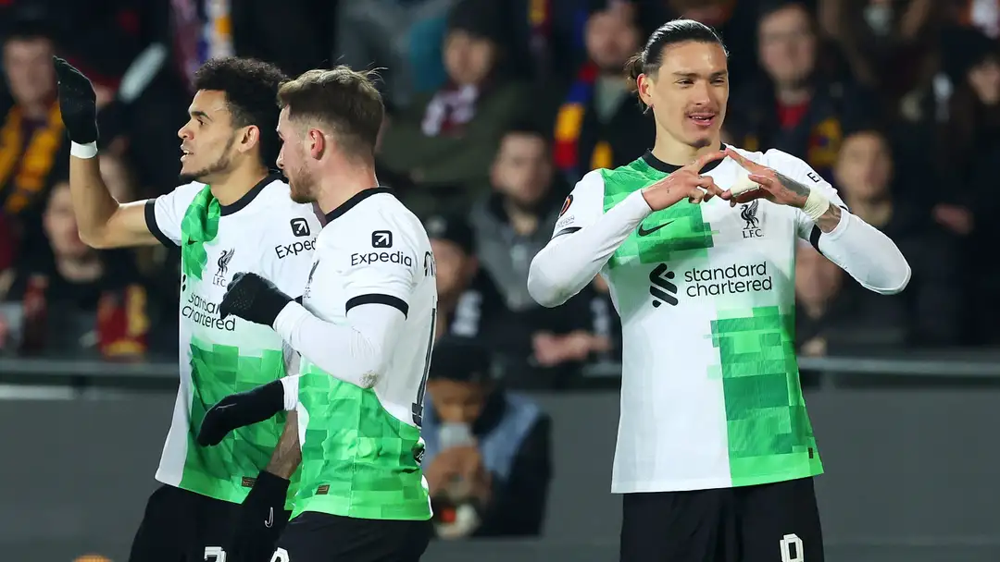

Liverpool player ratings vs Sparta Prague: Dazzling Darwin Nunez the star as ruthless Reds put one foot in Europa League quarter-finals after absolute thrashing
The Uruguay international scored two superb goals as a clinical Liverpool side all but secured their passage to the next round of the tournament
Darwin Nunez stared as Liverpool enjoyed a 5-1 thumping win over Sparta Prague on Thursday to put themselves within touching distance of the Europa League quarter-finals.
That scoreline papered over a performance that, in truth, left something to be desired, such were their defensive deficiencies.
Alexis Mac Allister opened the scoring from the penalty spot, having won the spot-kick with a superb piece of individual pressing. Nunez then added a second and a third with two brilliant strikes, the first coming from range, before he volleyed a finish into the bottom corner from just inside the box.
Despite the game appearing over, Sparta found a way back into the game from an unlikely source, as substitute Conor Bradley scored an own goal with his first touch in a rare woeful bit of defending from the youngster. However, Luis Diaz netted via a deflection shortly after to restore the Reds' three-goal lead. Mohamed Salah, on as a substitute, thought he had added a fifth but his strike was disallowed by VAR, so it was left to Dominik Szoboszlai to score the fifth.